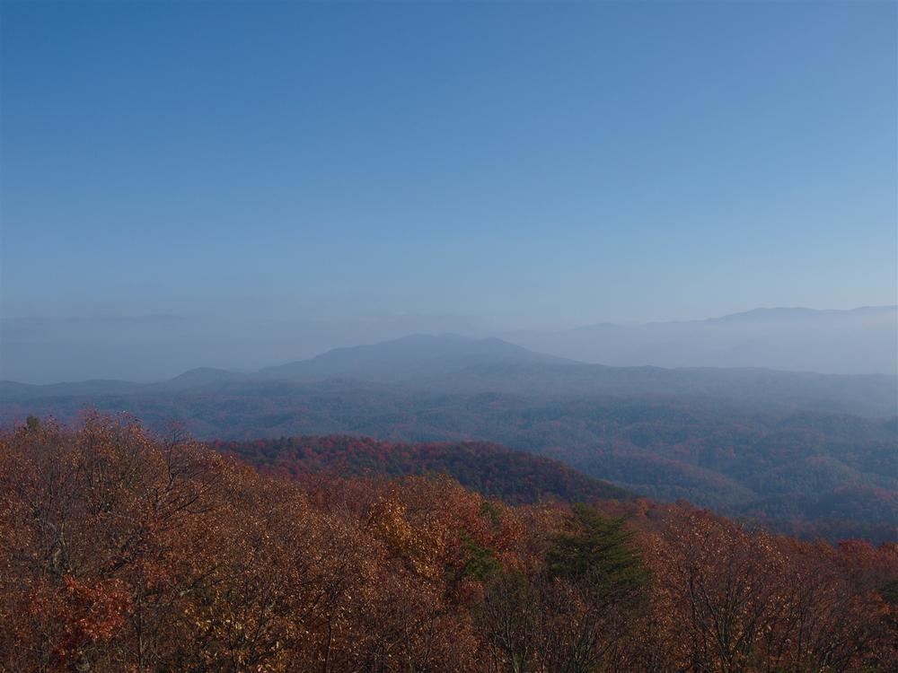
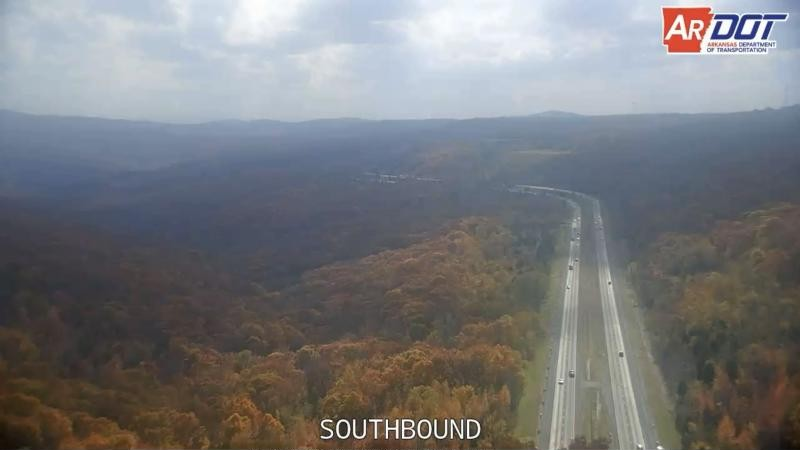
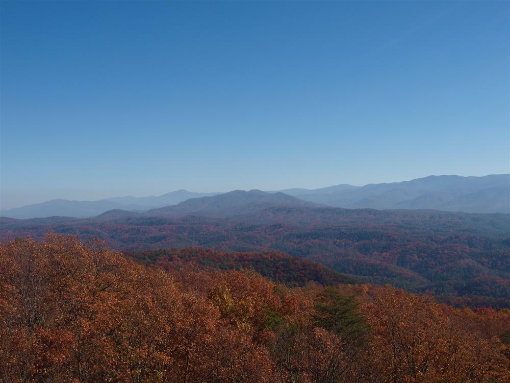

Existing cameras as air sensors
A park webcam in the Great Smoky Mountains, read for haze and checked against the monitor on the same tower.
0.79
Camera haze matches the park's haze instrumentStrong
Rank match across 77 daytime hours in November 2016.
90%
PM2.5 within one air-quality category on days it never sawPromising
Exact category 55% of the time, 29 hours, 19–29 Nov.
—
—

Camera PM2.5
—
Monitor PM2.5
—
Visibility
—
Daytime hours only (10:00–16:00), nights skipped. Click or drag to pick an hour; arrow keys step one hour.
Arkansas road cameras
The same model and the November calibration, unchanged. These views have no PM2.5 monitor nearby, which is why they matter.
46 km
From the Tunnel Tower camera to the nearest PM2.5 monitor
Springdale. The north-central Ozarks have no regulatory monitor at all.
—

Predicted PM2.5
—
Predicted visibility
—
Humidity
—
ARDOT keeps no archive and its terms forbid automated capture without permission, so frames are saved by hand from IDrive Arkansas. There is no monitor here to check against.
Which depth model sees the ridges
Run once on the clear Look Rock frame. The scene does not move, so one depth map serves every hour.

Light is near, dark is far, deepest navy is infinitely far. Depth Pro 2 weights are under Apple's research licence (non-commercial).
Videos
Recorded from this page and from the model's own numbers.
Details: how it works, sources and limits
- Haze model
- Far ridges fade toward the haze brightness. How fast they fade with distance gives extinction, the light lost per kilometre (Koschmieder).
- Distances
- Look Rock: the National Park Service landmark chart, 1 to 40 miles. Arkansas: ridge crests from AWS terrain tiles along the view, plus one estimated near distance.
- PM2.5
- Extinction minus clean air, divided by a mass factor fitted on 8–18 Nov 2016 only. Humidity exponent fixed at 0.4.
- Reference
- The NPS monitor (TEOM) on the Look Rock tower, read from the NPS AirWebCams archive. Not an EPA file; it can read low in heavy smoke.
- Gates
- No reading when the sun is low or in view, humidity is above 85%, or broken cloud fills the sky. 80 of 191 November hours passed.
- Limits
- Calibration is per season: a June 2016 test did not transfer. The camera reads the air across the valleys; the monitor reads the tower top, so they disagree when smoke lies low (26 Nov).
- Arkansas
- Single frames, no local monitor to check against. Humidity from the Fayetteville METAR. Any automated use of ARDOT cameras needs ARDOT's permission.